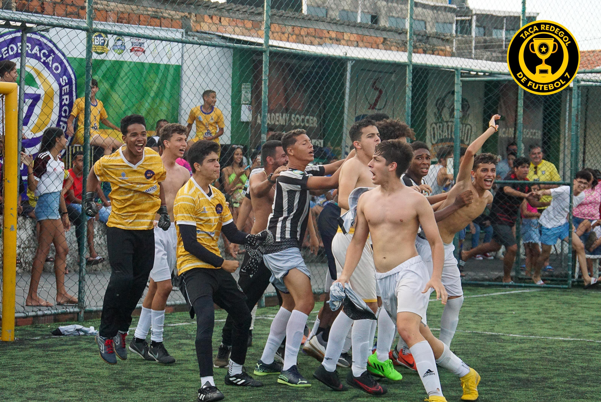

Bem-vindo à Realeza
Respeito, Comunhão e Ambição. O Real Clube Atlético escreve sua história no futsal, no fut7 e no futebol feminino de Sergipe desde 2019.

Próximos jogos
Temporada 2027
Uma realeza, três equipes
Do piso da quadra ao gramado sintético, o RCA veste a camisa em todas as frentes.
Últimas notícias

Do sonho de dois irmãos ao título
Fundado em setembro de 2019, em Aracaju, por Geovani Santos e Joaquim de França, o RCA nasceu com sete jogadores e a ambição de representar excelência, união e determinação.
Em outubro de 2022, veio a primeira taça: campeão invicto da Taça Redegol Sub-16 de Fut7, com virada histórica na final.
Respeito, Comunhão e Ambição
Respeito
Com adversários, árbitros, companheiros e com a história de quem veio antes.
Comunhão
Somos uma família azul e laranja. Dentro e fora de quadra, ninguém joga sozinho.
Ambição
Do sonho ao título, do título ao Brasil. Sempre buscando o próximo degrau.
Vista a coroa
Treinos, jogos e uma família esperando por você. Entre para o RCA como atleta, voluntário ou torcedor.